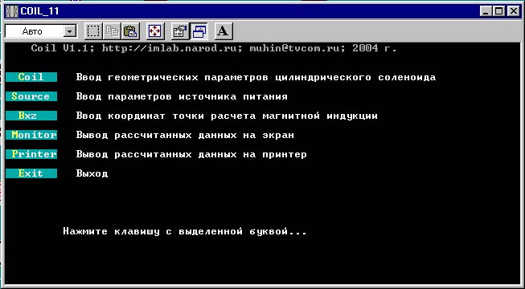
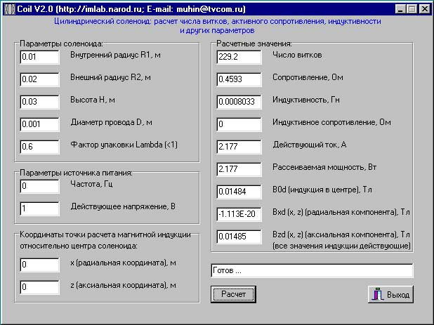
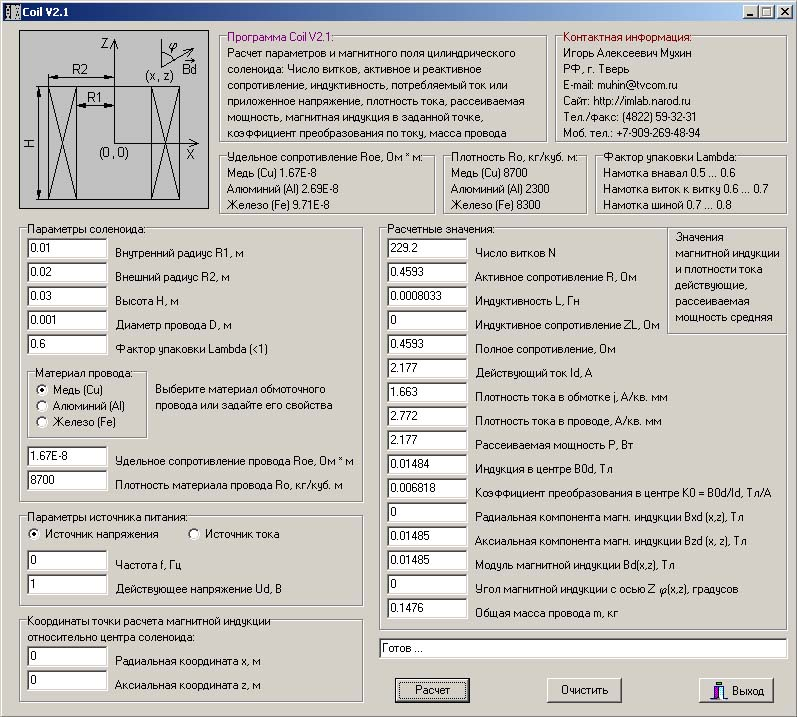
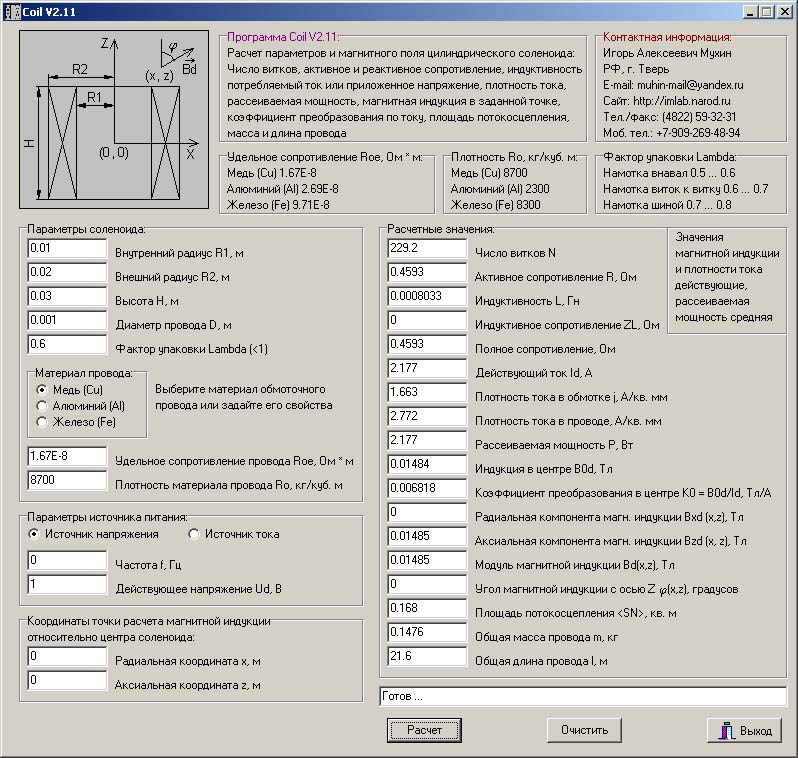

Coil: Программа для
расчета параметров и магнитного поля цилиндрического соленоида:
активное сопротивление, индуктивность, потребляемый ток, рассеиваемая мощность,
магнитная индукция в центре и в заданной точке пространства
На рисунке показан цилиндрический соленоид (без сердечника) в разрезе. Окружающая среда немагнитная и токонепроводящая (как правило, воздух).
Исходные данные:
R1 - внутренний радиус соленоида, м
R2 - внешний радиус соленоида, м
H - высота соленоида, м
D - диаметр обмоточного провода без изоляции (для проводов прямоугольного
сечения производится пересчет по формуле D=(4s/p)1/2,
где s - площадь поперечного сечения провода, м2), м
Lambda - фактор упаковки (отношение площади, занятой проводом в поперечном
сечении соленоида без учета изоляции, к площади поперечного сечения соленоида)
[8]
f - частота приложенного напряжения, Гц
Ed - действующее значение приложенного напряжения, В
x - радиус точки (относительно точки (0, 0)), в которой требуется рассчитать
составляющие магнитной индукции, м
z - высота точки (относительно точки (0, 0)), в которой требуется рассчитать
составляющие магнитной индукции, м
Расчетные данные:
R - активное сопротивление обмотки соленоида (условия нормальные), Ом
L - индуктивность соленоида, Гн
ZL - реактивное сопротивление соленоида, Ом
N - число витков
Id - действующее значение тока через соленоид, А
P - рассеиваемая в соленоиде мощность, Вт
B0d - магнитная индукция (действующее значение) в центре соленоида (точка (0,
0)), Тл
Bxd (x, z) - радиальная составляющая магнитной индукции (действующее значение) в
точке с координатами (x, z) (относительно точки (0, 0)), Тл
Bzd (x, z) - аксиальная составляющая магнитной индукции (действующее значение) в
точке с координатами (x, z) (относительно точки (0, 0)), Тл
Программа Coil позволяет рассчитывать по заданным геометрическим размерам (R1, R2, H), диаметру провода D и фактору упаковки Lambda: активное сопротивление R (по меди), индуктивность L, число витков N, величину тока Id в обмотке при заданном напряжении Ed заданной частоты f, рассеиваемую при этом мощность P, реактивное сопротивление ZL, величину магнитной индукции (Bxd, Bzd) в заданной точке пространства (x, z), величину магнитной индукции B0 в центре соленоида (0, 0). Расчеты производятся в системе СИ. Результаты выводятся на экран монитора, а также при необходимости на принтер (в некоторых версиях программы).
DOS-версия программы Coil версия 1.1

DOS-версия программы Coil V1.1: Coil_11.rar (~17 Кбайт)
В DOS-версии программы Coil (Coil_11) производится расчет всех вышеуказанных параметров: сопротивление, индуктивность, число витков, магнитная индукция в заданной точке пространства, а также ток через соленоид и рассеиваемая мощность. Результаты выводятся на экран монитора или на принтер. DOS-версия предназначалась для работы с операционными системами (ОС) MS-DOS и Windows 3.1, но может работать также с Windows 95, 98 и XP (с другими ОС не проверялась).
Файл Coil_11.rar необходимо распаковать в заранее созданную папку. Упаковка производилась с помощью WinRAR 3.60. Результат распаковки: Coil_11.exe - исполняемый файл программы, Coil.ico - значок, который можно привязать к программе и поместить на рабочий стол. После запуска программы управление осуществляется с помощью клавиатуры (горячие клавиши, ввод цифровых данных). Исходные данные (R1 - внутренний радиус соленоида, R2 - внешний радиус соленоида, H - высота соленоида, D - диаметр обмоточного провода) необходимо вводить в метрах. Фактор упаковки Lambda может изменяться приблизительно от 0.5 для намотки круглым проводом внавал до 0.75 при намотке круглым проводом или шиной прямоугольного сечения виток к витку. Частота источника питания вводится в герцах, напряжение - в вольтах. Разделителем для десятичной дроби при вводе данных служит точка, например, 0.005.
Формат выходных данных экспоненциальный, например, 1.23456789012345E-0003 = 0.00123456789012345.
Для исходных данных:
R1 = 0.01 м (10 мм)
R2 = 0.02 м (20 мм)
H = 0.03 м (30 мм)
D = 0.001 м (1 мм)
Lambda = 0.6
f = 0 Гц
Ed = 1 В
расчетные данные должны быть:
N = 2.29183105468750E+0002 витков (~229 витков)
R = 4.59282875061035E-0001 Ом (~0.46 Ом)
L = 8.03295522928238E-0004 Гн (~0.8 мГн)
Id = 2.17730736732483 А (~2.177
А)
P = 2.17730736732483 Вт (~2.177
Вт)
B0d = 1.48447221145034E-0002
Тл (~14.84 мТл)
Windows-версия программы Coil версия 2.0

Демонстрационная Windows-версия программы Coil V2.0 Demo: Coil_20d.rar (~88 Кбайт)
В демонстрационной Windows-версии программы Coil V2.0 Demo (Coil_20d) производится расчет сопротивления, индуктивности, числа витков. Результаты выводятся на экран монитора. Windows-версия предназначалась для работы с ОС Windows 3.1, Windows 95, 98 и XP (с другими ОС не проверялась).
Файл Coil_20d.rar необходимо распаковать в заранее созданную папку. Упаковка производилась с помощью WinRAR 2.80. Результат распаковки: Coil_20d.exe - исполняемый файл программы. После запуска программы можно вводить входные данные и производить расчет нажатием соответствующей кнопки. Исходные данные (R1 - внутренний радиус соленоида, R2 - внешний радиус соленоида, H - высота соленоида, D - диаметр обмоточного провода) необходимо вводить в метрах. Фактор упаковки Lambda может изменяться приблизительно от 0.5 для намотки круглым проводом внавал до 0.75 при намотке круглым проводом или шиной прямоугольного сечения виток к витку. При вводе входные данные необходимо учитывать принятый в ОС формат разделителя для десятичной дроби – точка или запятая (например, 0.005 или 0,005). Если в ОС формат разделителя запятая, то ввод производится с запятой, в противном случае будет выдаваться сообщение об ошибке. Смена формата разделителя десятичной дроби в ОС: Мой компьютер - Панель управления - Язык и стандарты - Настройка - Установить разделитель целой и дробной части.
Для исходных данных:
R1 = 0.01 м (10 мм)
R2 = 0.02 м (20 мм)
H = 0.03 м (30 мм)
D = 0.001 м (1 мм)
Lambda = 0.6
расчетные данные должны соответствовать представленному выше рисунку:
N = 229.2 витков
R = 0.4593 Ом
L = 0.0008033 Гн
Windows-версия программы Coil версия 2.1

В данной версии программы Coil добавлена возможность задавать удельное сопротивление rE и плотность r материала провода, представлять источник питания как источник напряжения или источник тока и рассчитывать некоторые дополнительные параметры: плотность тока в проводе и обмотке j, коэффициент преобразования в центре K0, модуль магнитной индукции Bd и угол f магнитной индукции с осью Z в точке с координатами x и z, а также общую массу m обмоточного провода (по металлу).
Демонстрационная Windows-версия программы Coil V2.1 Demo: Coil_21d.rar (~183 Кбайт)
В демонстрационной Windows-версии программы Coil V2.1 Demo (Coil_21d) производится расчет всех параметров соленоида, как и в полной версии. Индукция магнитного поля рассчитывается только в центре соленоида. В качестве источника питания может быть выбран только источник напряжения. Результаты выводятся на экран монитора. Windows-версия разрабатывалась для работы с ОС Windows XP и Windows Vista (с другими ОС не проверялась).
Файл Coil_21d.rar необходимо распаковать в заранее созданную папку. Упаковка производилась с помощью WinRar 3.60. Результат распаковки: Coil_21d.exe - исполняемый файл программы. После запуска программы можно вводить входные данные и производить расчет нажатием соответствующей кнопки. Исходные данные (R1 - внутренний радиус соленоида, R2 - внешний радиус соленоида, H - высота соленоида, D - диаметр обмоточного провода) необходимо вводить в метрах. Фактор упаковки Lambda может изменяться приблизительно от 0.5 для намотки круглым проводом внавал до 0.75 при намотке круглым проводом или шиной прямоугольного сечения виток к витку. При вводе входные данные необходимо учитывать принятый в ОС формат разделителя для десятичной дроби – точка или запятая (например, 0.005 или 0,005). Если в ОС формат разделителя запятая, то ввод производится с запятой, в противном случае будет выдаваться сообщение об ошибке. Смена формата разделителя десятичной дроби в ОС: Мой компьютер - Панель управления - Язык и стандарты - Настройка - Установить разделитель целой и дробной части. Корректность расчета можно оценить по вышеприведенному рисунку.
Windows-версия программы Coil версия 2.11

Версия 2.11 позволяет дополнительно рассчитывать суммарную площадь потокосцепления цилиндрического соленоида с однородным магнитным полем, что может оказаться полезным при конструировании измерительных катушек [2]. Помимо массы провода заданного диаметра дополнительно рассчитывается его длина. Кроме того, версия программы нечувствительна к виду десятичного разделителя целой и дробной частей исходных данных (можно использовать как точку, так и запятую).
С помощью программы Coil можно рассчитывать индукцию магнитного поля и параметры систем соленоидов, используя принцип суперпозиции [1] и различные методики [5].
Скопированные файлы могут быть проверены на отсутствие вирусного кода в режиме on-line [7].
По вопросу получения полной версии программы обращайтесь к автору (см. раздел Контактная информация).
Ссылки:
20.05.2004
24.06.2004
16.07.2004
07.10.2005
17.04.2006
28.12.2006
28.09.2014
09.02.2022
Альтернативные источники
энергии
Компьютеры и
Интернет
Магнитные поля
Механотронные системы
Перспективные
разработки
Электроника и
технология